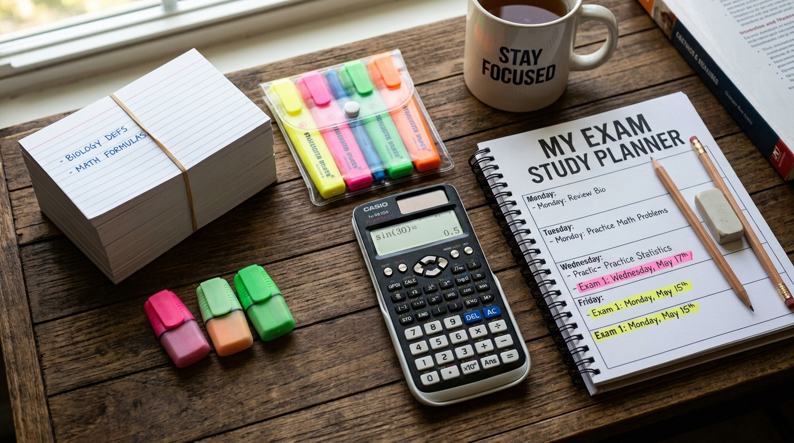

Whether you're preparing for finals or trying to stay on top of weekly assignments, the right study habits — paired with the right tools — can make all the difference. After speaking with teachers, tutors, and top-performing students, we've compiled ten strategies that consistently deliver results.
1. Color-Code Your Notes
Using different colored pens and highlighters helps your brain categorize information. Assign one color to key terms, another to examples, and a third to questions you need to revisit. Our Premium Gel Pen Set and Highlighter Set are perfect starting points.
2. Use the Pomodoro Technique
Study in focused 25-minute blocks with 5-minute breaks in between. After four cycles, take a longer 15–30 minute break. This prevents burnout and keeps your mind sharp throughout long sessions.
3. Teach What You Learn
Explaining a concept aloud — even to an imaginary audience — forces you to organize your thoughts and identify gaps in your understanding. Grab a whiteboard marker or a dedicated "teaching notebook" to practice this technique.
4. Create a Dedicated Study Space
A consistent environment signals to your brain that it's time to focus. Keep your desk stocked with essentials: pens, sticky notes, a planner, and a good lamp. Remove distractions like your phone from arm's reach.
5. Active Recall Over Passive Re-Reading
Close your textbook and write down everything you remember about a topic. Then check what you missed. Flashcards — physical or digital — are excellent tools for active recall practice.

6. Spaced Repetition
Review material at increasing intervals: one day later, three days later, one week later, and so on. This combats the forgetting curve and moves information into long-term memory.
7. Summarize in Your Own Words
After each study session, write a one-paragraph summary of what you covered. If you can't summarize it simply, you don't understand it well enough yet.
8. Study Groups (Done Right)
Small groups of 3–4 focused peers can be powerful. Set an agenda before meeting, assign topics to each person, and quiz each other. Avoid groups that turn into social hangouts.
9. Match Tools to Tasks
Graph paper for math, grid notebooks for diagrams, dot-grid journals for bullet journaling — using the right paper format reduces friction and keeps your work organized.
10. Sleep and Hydrate
No stationery hack replaces rest. Aim for 7–9 hours of sleep before exam days, keep water at your desk, and take walking breaks to reset your focus.
Ready to upgrade your study setup? Browse our Back-to-School Bundles or build your own kit on the Products page.